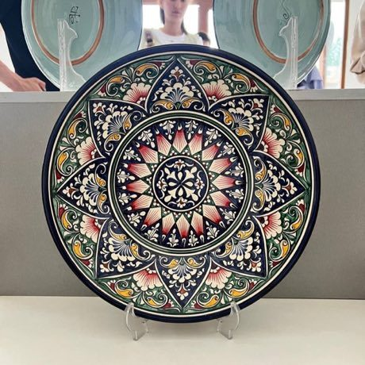
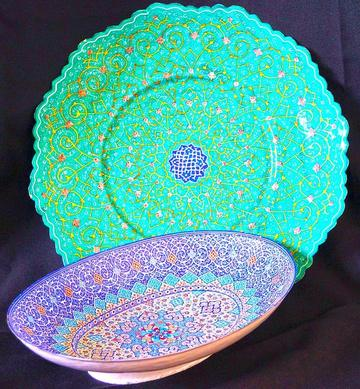

Home / Living Traditions / Persia, Caucasus and Central Asia
Playable heritage gameRishtan ceramics
Also known as Риштон кулоллиги · ishkor glaze plates
Potters of Rishtan, in the Fergana valley, throw broad plates and bowls from local red clay and paint them with an alkaline ash glaze that fires to deep turquoise, cobalt and green. The big serving plate, called a lagan, can be a metre across.


How to play
- Study the plate in the frame: a small foot, a sloping wall and a wide rim.
- Drag across each row of spinning clay to set its width.
- Press Glaze, choose a colour and fill the four bands from the centre outward.
- Press Check when the plate and its glaze match.
Rules at a glance
- Eight rows of clay, each from one to twelve steps wide.
- Seventy points for the shape and thirty for the glaze bands.
- Three stars need a nearly exact plate with its colours in order.
About the tradition
Potters of the Fergana valley have made glazed ware at Rishtan for centuries, drawing flowers and leaves from nature in blue-green glaze made from the ash of desert plants. Workshops pass the craft from parent to child, and the glaze was revived in the 1970s.
Origins
A living tradition passed from person to person; it is not tied to a single dated origin. It belongs to the cultural world of Persia, Caucasus and Central Asia.
Credits
- Craft model: World Heritage Games (original)
- Photo: UzbekistanWikiEditor, CC BY 4.0, source on Wikimedia Commons
- Text: CC BY-SA 4.0, World Heritage Games.
Sources

Get the app
Rishtan ceramics is one of 8 craft designs in the Craft Designs of the World app for iPhone, iPad and Android. Submitted to the App Store and Google Play; in review. Store links appear here the day it goes live. One app, many traditions, no account needed.
More games to play

Jaipur blue pottery painting
India · Crafts and makingPlay preview · in the Tiles & Pottery of the World app
Maldivian lacquer work
Maldives · Crafts and makingPlay preview · in the Woodcraft & Metal of the World app


Ikat Pattern Dyeing
Uzbekistan · Crafts and makingPlay preview · in the Textile Crafts of the World app
More from Uzbekistan


Suzani embroidery
Uzbekistan +1 · Crafts and makingPlay preview · in the Textile Crafts of the World appNard / long backgammon
Uzbekistan · Board and table gamesShashki / chess
Uzbekistan · Board and table games